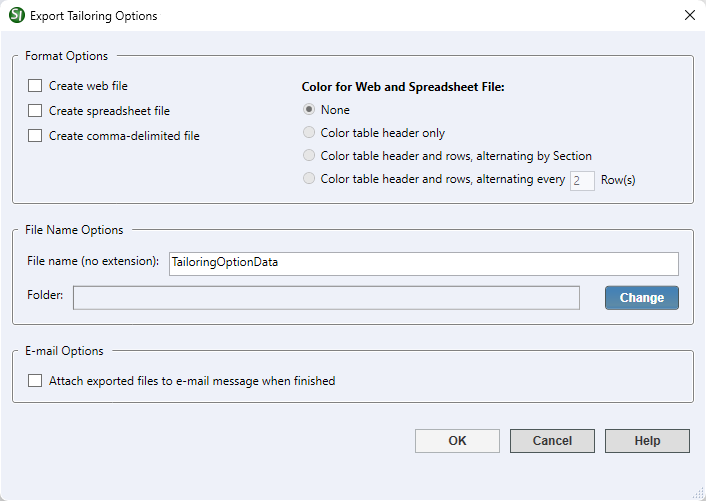

This command can also be executed from the SpecsIntact Explorer's Right-click menu.
The Export Tailoring Options command produces Web (.htm), Spreadsheet (.xlsx), or Comma-delimited (.txt) files containing the Job or Master Tailoring Options. Exporting the Tailoring Options List to a Web file is intended to provide a form the project team can use to mark the Tailoring Options to exclude from the Job, Master, or Section(s). The various formats can be opened in any Web Browser, spreadsheet application, text application (e.g., Notepad), or emailed to the project team.
The generated file(s) will be available within the SpecsIntact Explorer and located in the Job or Master Exports folder.

Creates a Web file that can be opened with any Web browser (e.g.. Internet Explorer, Chrome, Firefox, etc.) for viewing. It may also be opened with any spreadsheet application for editing if required. The default output file name is TailoringOptionData.htm.
Creates a spreadsheet file that can be opened with any spreadsheet application. The default output file name is TailoringOptionData.xlsx.
This file contains the Job or Master's Tailoring Options data in comma-delimited format. The default output file name is TailoringOptionData.txt and can be opened with Notepad or Microsoft Excel.
 Single or multiple files can be exported within the same session. After processing, the exported files will be available within the SpecsIntact Explorer and located in the Job or Master Exported Files folder.
Single or multiple files can be exported within the same session. After processing, the exported files will be available within the SpecsIntact Explorer and located in the Job or Master Exported Files folder.
The default color option is 'no color' though three additional color options are available for customization:
The default TailoringOptionsData file name is automatically generated based on the Job or Master name but can be customized in the provided text field. Microsoft Windows reserved characters to avoid when naming files or folders are the left and right angle brackets, colon, quotation, forward and back slash, pipe symbol, question mark, and asterisks as indicated here: < > : " / \ | ? *
 The file extension should not be entered, since the software will automatically insert the correct extension based on the selection below Format Options.
The file extension should not be entered, since the software will automatically insert the correct extension based on the selection below Format Options.
By default, the Exported Tailoring Options List will be saved to the Job or Masters Exports folder. Click the Change button if you'd like to save the Exported Tailoring Options List to a different location.
When selected, this feature will create a new e-mail message and attach the selected file(s) to easily send to your team members or customers.
 This feature supports MAPI e-mail clients, like Microsoft Outlook or Mozilla Thunderbird. Web-based e-mail clients that use POP3 and IMAP like Gmail, Yahoo, etc. are not supported.
This feature supports MAPI e-mail clients, like Microsoft Outlook or Mozilla Thunderbird. Web-based e-mail clients that use POP3 and IMAP like Gmail, Yahoo, etc. are not supported.
 The OK button will execute and save the selections made.
The OK button will execute and save the selections made.
 The Cancel button will close the window without recording any selections or changes entered.
The Cancel button will close the window without recording any selections or changes entered.
 The Help button will open the Help Topic for this window.
The Help button will open the Help Topic for this window.
 Watch the Export Tailoring Options List eLearning module within Chapter 8 - Additional Tools and Techniques.
Watch the Export Tailoring Options List eLearning module within Chapter 8 - Additional Tools and Techniques.
Users are encouraged to visit the SpecsIntact Website's Support & Help Center for access to all of our User Tools, including Web-Based Help (containing Troubleshooting, Frequently Asked Questions (FAQs), Technical Notes, and Known Problems), eLearning Modules (video tutorials), and printable Guides.
| CONTACT US: | ||
| 256.895.5505 | ||
| SpecsIntact@usace.army.mil | ||
| SpecsIntact.wbdg.org | ||